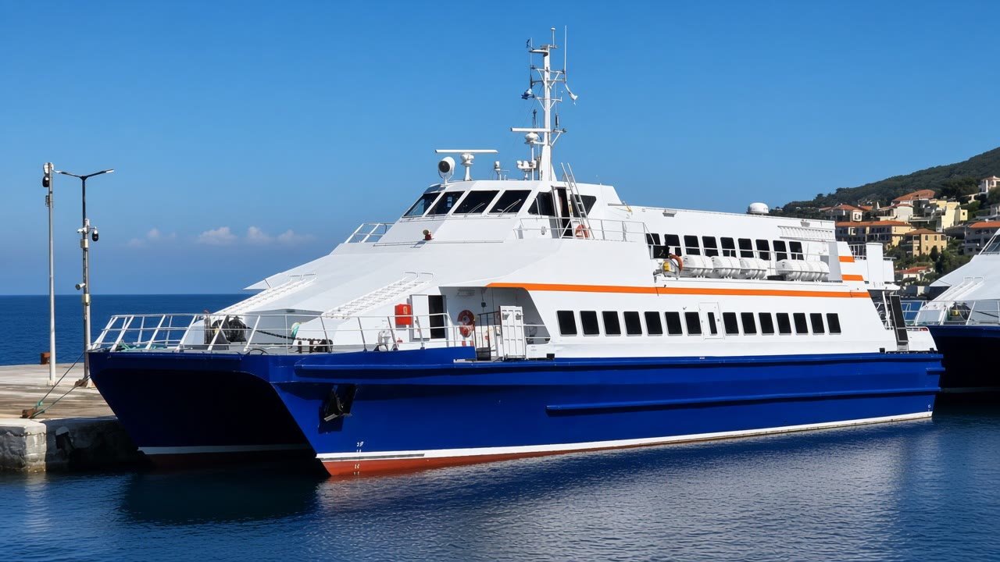

Sizin referansınız
Mevcut `ferry-live.jpg` — hero atmosferinin kaynağı. Kenardan kenara, inset kart yok.
Operatör · Pazartesi limanı
Veriler bu cihazda şifreli kalır. Kapı listesini açın veya yeni liste yükleyin.
Öncelikli işler — canlı liste girişi
Açık / bekleyen / bloke
Aktif iş dosyası yok. Bir C kodu ile başlayın.
Öneri E+ · Canlı prototip Gerçek İDO feribot fotoğrafı + logo. Hareket: yavaş ferry drift, stagger liste girişi, CTA/hover mikro etkileşim. Statik mockup değil — tarayıcıda çalışan arayüz.

Mevcut `ferry-live.jpg` — hero atmosferinin kaynağı. Kenardan kenara, inset kart yok.

Lacivert gövde · beyaz üst yapı · turuncu güvenlik şeridi → chrome / masa / CTA.
Turuncu güneş #F58220 · lacivert #005596 · cyan yunus #00AEEF (yalnız vurgu).
OpenBridge (AHO) — güvenlik kritik deniz arayüzleri. openbridge.no/design